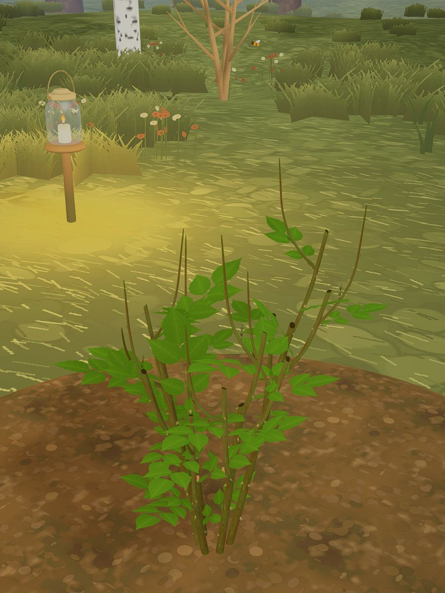
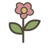
봄 3월~5월
줄기마다 바깥쪽을 향한 눈 위에서 잘라 포기 가운데가 트이게 해 주세요. 흙을 부드럽게 일구고, 멀칭하고, 비료를 줘요. 새 줄기가 올라오고 첫 꽃봉오리가 맺히면, 진딧물이 먼저 알아채요. 무당벌레 집이 도움이 돼요.
4월 중순에 장미를 심고, 정원사가 하는 방식대로 돌봐요. 흙이 마르면 물을 주고, 시든 꽃은 잎 바로 위에서 잘라요. 된서리가 내리기 전에는 덮개를 씌워 주세요. 장미는 자기 속도대로 자라고, 휴대폰이 주머니 속에 있을 때도 계속 자라요.
2026년 11월 10일 Android 출시.
무료 플레이, 광고 없음.
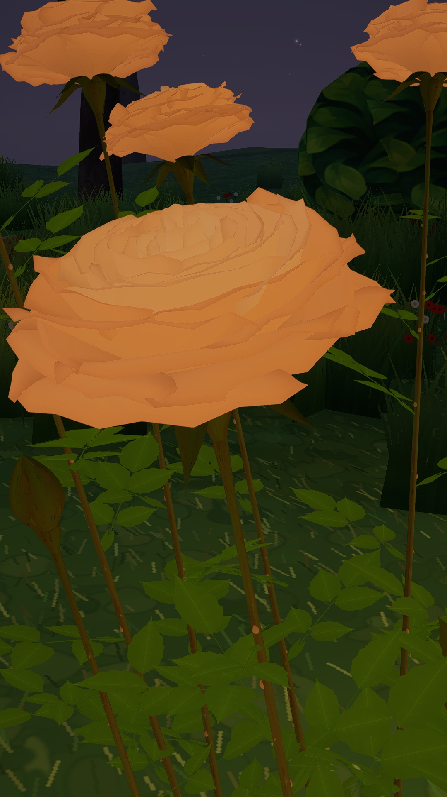
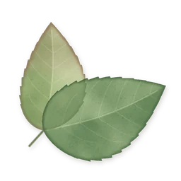
흙을 살피고, 시든 꽃을 자르고, 일기예보를 확인하면 끝이에요. 하루 거르더라도 정원은 계속 흘러가요. 장미에게 정말 도움이 필요할 때는 게임이 알려 줘요.
흙을 말리면 시들고, 물을 너무 자주 주면 뿌리가 상해요. 시든 꽃을 그대로 두면 새 꽃봉오리 대신 열매를 맺어요. 비료를 제때 주면 다음 꽃은 더 힘차게 피어요.
가지치기, 가을 북주기, 겨울 덮개는 정원사들이 실제 하이브리드 티 장미에 하는 방법 그대로예요. 꽃봉오리가 피려면 며칠, 새 줄기가 꽃을 피우려면 몇 주가 걸리는 것도 실제 정원과 같아요. 다만 게임 속 하루가 우리 하루보다 짧아서, 일 년이 훨씬 빨리 돌아와요.
계절이 바뀌고, 날씨는 5일 예보를 따라가요. 정원에는 늘 누군가 찾아와요. 꿀벌, 나비, 무당벌레, 모이통에 앉은 새.
게임은 장미를 심는 4월 중순에 시작해요. 계절마다 해야 할 일이 달라요.


줄기마다 바깥쪽을 향한 눈 위에서 잘라 포기 가운데가 트이게 해 주세요. 흙을 부드럽게 일구고, 멀칭하고, 비료를 줘요. 새 줄기가 올라오고 첫 꽃봉오리가 맺히면, 진딧물이 먼저 알아채요. 무당벌레 집이 도움이 돼요.
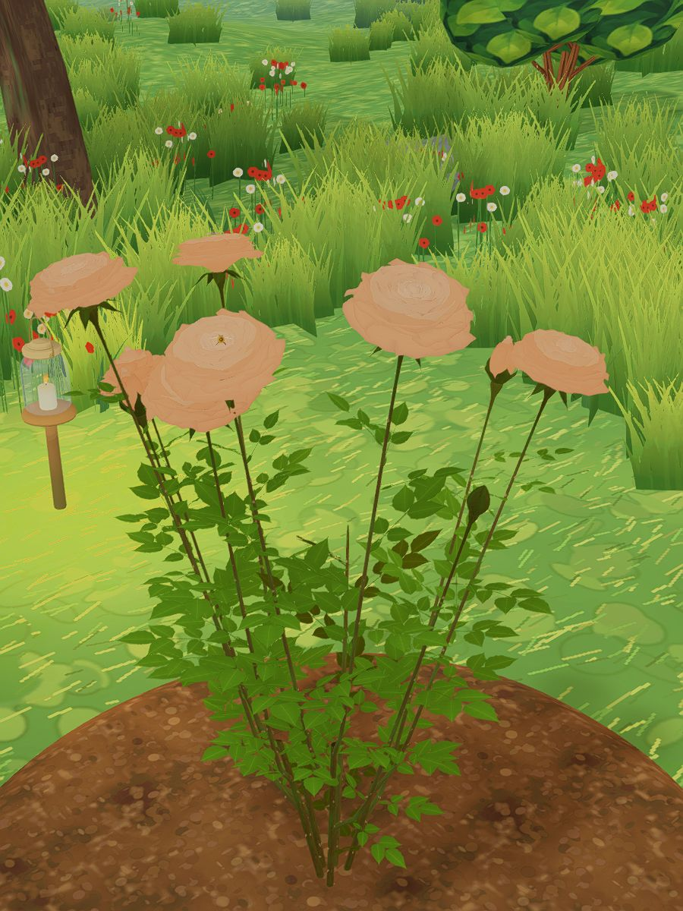
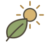
흙이 마르면 뿌리 쪽에 물을 줘요. 시든 꽃은 작은잎이 다섯 장인 잎 바로 위에서 자르면, 그 자리에서 새 줄기가 자라요. 잎에 흑반병이나 흰가루병이 생기지 않는지 살펴보세요. 폭풍이 지나가면 부러진 줄기를 깔끔하게 잘라 정리해요.
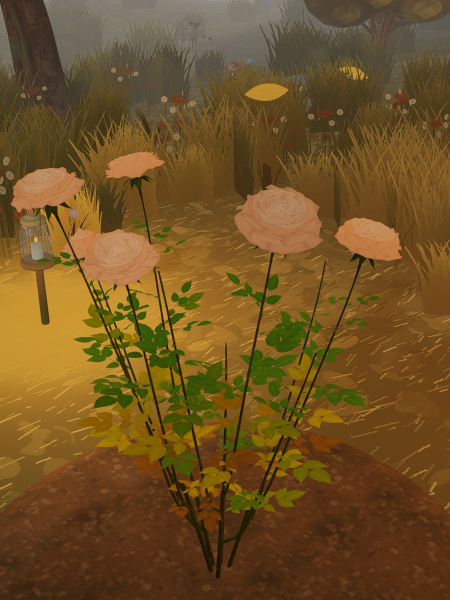
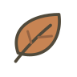
마지막 꽃이 지고 열매가 맺히기 시작해요. 잎은 노랗게 물들어 떨어져요. 첫서리가 내린 뒤에는 밑동에 북을 주고, 겨울에 대비해 줄기를 짧게 잘라요.
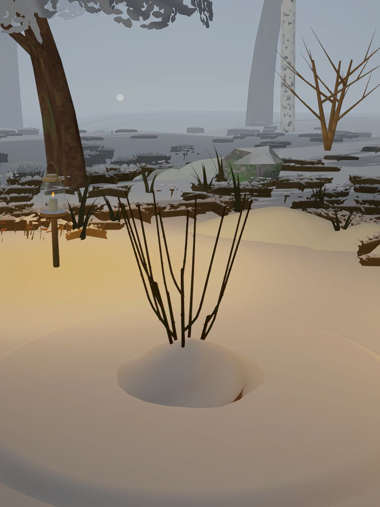
덮개는 추위가 자리 잡은 뒤에 씌우세요. 너무 일찍 씌우면 안이 눅눅해져요. 날이 풀리면 환기해 주세요. 쥐가 밑동을 노려요. 3월 말 흐린 날에 덮개를 벗기고, 겨울을 어떻게 났는지 살펴봐요.
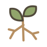
땅이 얼지 않았다면 뿌리까지 파 볼 수 있어요. 굼벵이를 골라내고, 썩은 곳을 잘라 내고, 접목 부위 아래에서 올라오는 흡지를 뽑아요.게임을 꺼도 시간은 계속 흘러요. 돌아오면 그사이 일어난 일을 짧게 정리해서 보여 줘요. 비가 두 번 왔고, 꽃봉오리가 하나 피었고, 꿀벌이 다녀갔어요. 가을과 겨울은 빠르게 지나가다가, 장미에게 손길이 필요할 때 다시 느려져요.
기후는 온화한 편이에요. 여름은 따뜻하고, 서리가 제대로 내리고, 눈이 쌓여요. 물을 주기 전에 일기예보를 확인하세요. 비가 올 예정이라면 비가 대신 물을 줘요.
활짝 핀 꽃에는 꿀벌과 나비가 찾아와요. 무당벌레는 진딧물을 먹어요. 새집을 달면 진딧물을 잡는 새가 오고, 따뜻한 돌을 두면 개미를 쫓아내는 도마뱀이 와요. 겨울에는 쥐를 조심하세요.
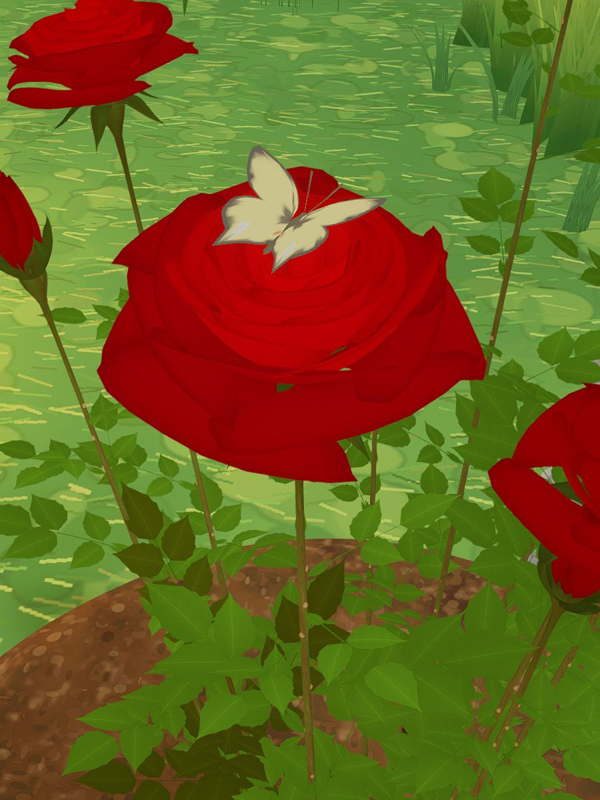
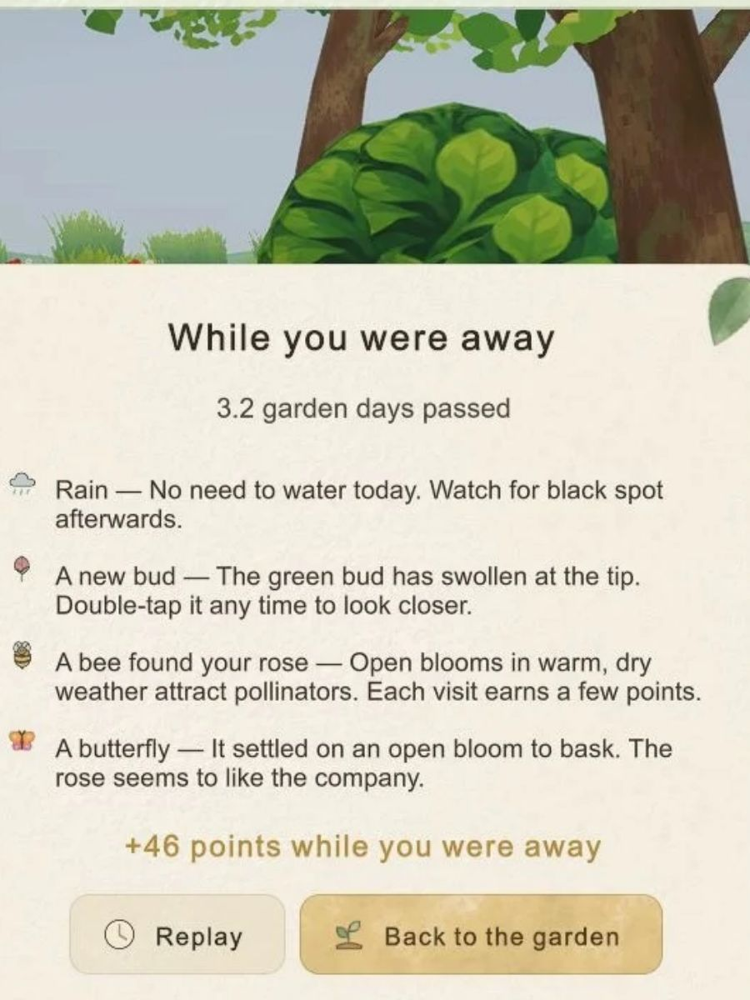
생김새도 향기도 성격도 저마다 달라요. 보기 좋은 걸로 골라도 되고, 나의 정원 가꾸기 스타일에 맞춰 골라도 돼요.
크고 튼튼한 덤불에 가장자리가 분홍빛인 커다란 크림빛 노란 꽃이 펴요.
주름진 꽃잎이 풍성한 복숭아빛 꽃. 과일 향이 진하고, 여름 내내 몇 차례씩 꽃이 피어요.
크림색 꽃잎에 체리처럼 붉은 테두리가 있어요. 햇빛을 받을수록 테두리가 짙어져요. 향이 아주 진해요.
길고 곧은 줄기에 선명한 레몬빛 꽃이 펴요. 꽃 하나하나가 아주 오래가요.
길고 곧은 줄기에 벨벳 같은 진홍색 꽃이 펴요. 올드 로즈의 풍부한 향이 나요.
달콤한 향이 나는 선명한 라즈베리빛 꽃. 여름 내내 새 꽃이 금세 피어요.
시네마 모드에서는 버튼이 모두 사라지고, 카메라가 천천히 정원을 돌아요. 맑은 밤에는 별을 올려다볼 수 있어요. 별은 진짜 하늘처럼 머리 위에서 천천히 돌아요.
가장 예쁘게 핀 꽃을 찍는 사진 모드도 있고, 빗소리와 새소리가 깔린 잔잔한 음악이 흘러요.
사전 등록하면 출시될 때 Google Play가 알려 줘요. 출시 당일에 게임을 자동으로 설치해 줄 수도 있어요.